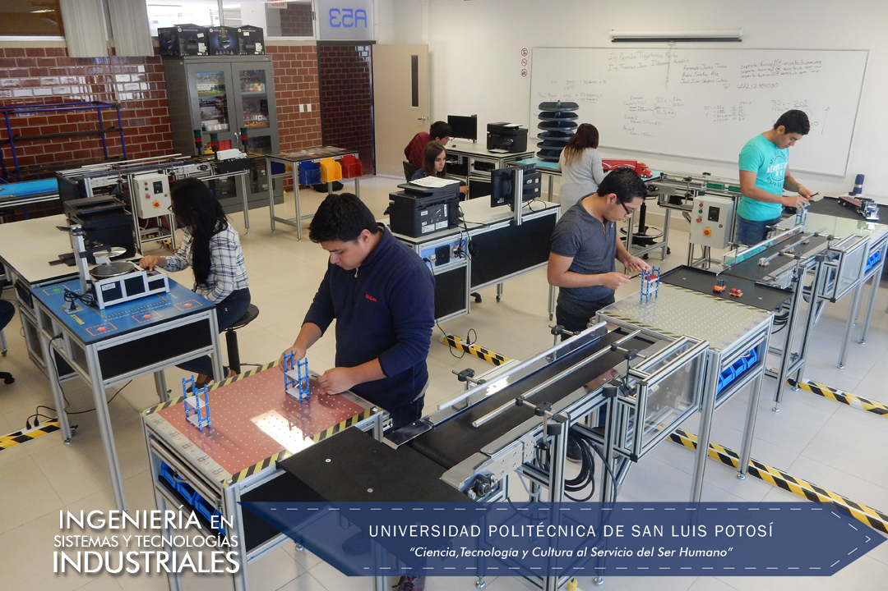

Ingeniería en Sistemas y Tecnologías Industriales

En Ingeniería en Sistemas y Tecnologías Industriales se busca preparar a los alumnos en las 5 grandes áreas que comprende la Ingeniería Industrial como lo son: Producción, Calidad, Suministros de Materiales, Productividad y Seguridad, todo bajo un enfoque sistémico y pertinente, con la transmisión del conocimiento más actual en razón de metodologías, herramientas y software aplicable a los procesos de producción y de servicios. Además de la tecnología, busca que los alumnos se preparen para administrar y dirigir al personal.
De inicio y como parte de la preparación en Ingeniería, las materias que cursará el alumno se basan primordialmente en el razonamiento matemático y de las ciencias, en el uso de tecnologías de la información y comunicación y en la creación de hábitos de estudio y psicosociales que faciliten su desarrollo académico y laboral.
Conforme avanzan en su carrera, se incorporan cada vez más materias específicas del campo de la Ingeniería en sistemas y tecnologías industriales, para finalizar con materias especializadas en los conocimientos más modernos; siendo materias integradoras que permitan el logro de competencias requeridas en el campo laboral; incluyendo el inglés. Al finalizar los alumnos de ISTI deben realizar un período de residencia profesional (480 hrs. mínimo), donde puedan vivir prácticamente lo que se vio en las aulas; aunque en muchas de las materias de ISTI se deben realizar proyectos finales de aplicación en la industria que permiten un acercamiento vivencial temprano en su carrera; al igual que al hacer prácticas profesionales.
Los alumnos más destacados y con buen nivel de inglés, pueden acceder desde sexto semestre a la industria mediante el programa coop; un programa dual cooperativo de Formación Universidad – Empresa.
Se tiene también la actividad continua del capítulo #736 del Institute for Industrial Engineers (IIE), donde los alumnos organizan actividades de desarrollo académico, de responsabilidad social y de fondeo económico para asistir y organizar congresos nacionales (Puebla, Monterrey, Saltillo, Mérida, Villahermosa, Aguascalientes, Hermosillo, Ciudad Madero) y congresos y visitas internacionales (Cancún, Montreal, San Antonio, Houston y Nashville).
Plan de Estudios
Consulta el Plan de Estudios
Certificaciones:
- Auditor Interno ISO/TS 16949 (Automotive Industry Action Group)
- Core Tools (Automotive Industry Action Group)
- Auditor Interno ISO 14000 e ISO 18000 (STPS)
- Lean Practitioner (IIE)
- Green Belts Six Sigma (STPS)
- Cursos SAP y MINITAB
Logros / Distinciones
- 1er lugar Nacional de ensayo técnico por parte de la Región México del Institute of Industrial Engineers (IIE) en Cd. Madero, Tamps. y en SLP (2014 y 2015)
- 3er. Lugar en la Competencia Internacional de ensayo técnico por parte del Institute of Industrial Engineers (IIE) en Montreal, Canadá. 2014
- 2º. Lugar en la Competencia Internacional de ensayo sobre Manufactura Esbelta por parte del Institute of Industrial Engineers (IIE) en Nashville, Tenn. USA 2015
- 1er. Lugar Nacional y 8vo. Internacional en Excel 2013 en Dallas, Tx. USA, competencia organizada por Microsoft en casi 125 países.
- 3 Premios Nacionales de CENEVAL por alto desempeño en el examen de egreso de Ing. Industrial.
- 7 medallas a estudiantes ejemplares otorgadas por la asociación Trayectoria de Éxito.